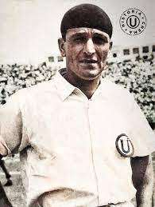
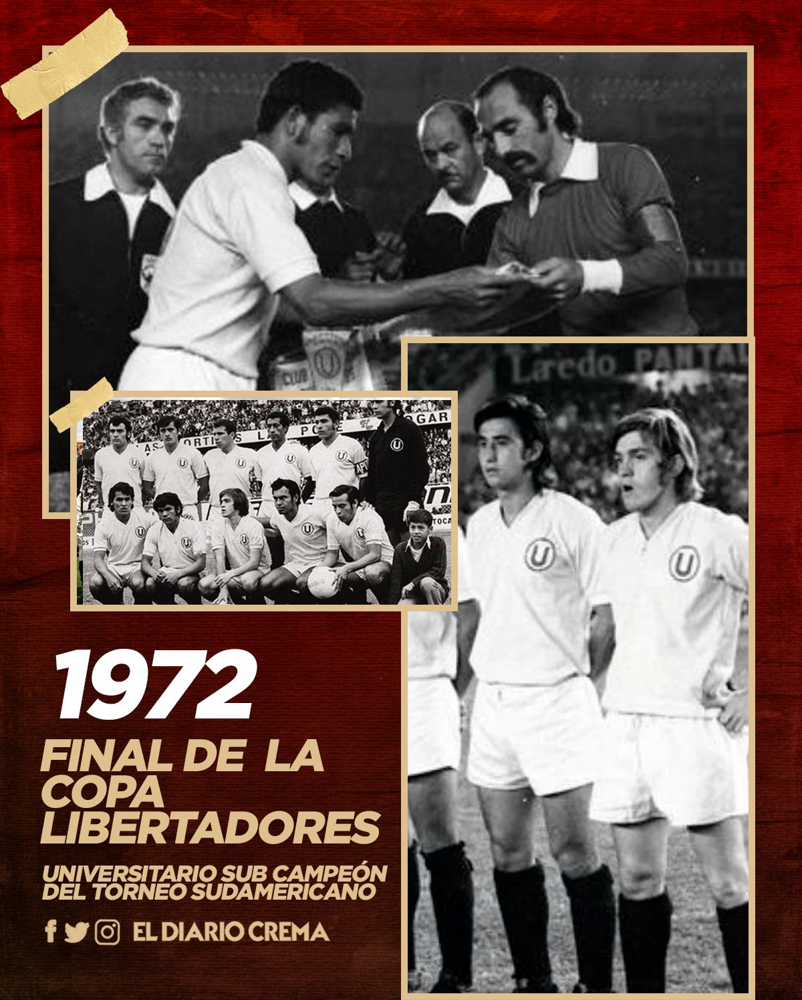

Universitario de Deportes

Biografía
El Club Universitario de Deportes, también conocido como "la U", es un club de fútbol peruano fundado el 7 de agosto de 1924 por un grupo de jóvenes estudiantes de la Universidad Nacional Mayor de San Marcos. El club es el más popular del Perú y uno de los más exitosos, con 27 títulos nacionales, 7 Copas Perú, 1 Copa Libertadores de América y 1 Copa Interamericana.
Los primeros años
Los primeros años del club estuvieron marcados por el amateurismo. En 1927, Universitario ganó su primer título nacional, convirtiéndose en el primer club peruano en ganar un campeonato oficial. En 1931, el club cambió su nombre a "Club Universitario de Deportes" para evitar confusiones con otros clubes que también usaban el nombre "Federación Universitaria".
La era profesional
El profesionalismo llegó al fútbol peruano en 1951, y Universitario fue uno de los clubes fundadores de la Primera División. En 1959, el club ganó su primer título profesional, y en 1964 logró el bicampeonato.
Los años 70: La época dorada
La década de 1970 fue la época dorada de Universitario. El club ganó siete títulos nacionales, entre ellos el bicampeonato de 1971-72. En 1972, Universitario llegó a la final de la Copa Libertadores, donde perdió ante Independiente de Argentina.
Los años 80 y 90
En las décadas de 1980 y 1990, Universitario siguió siendo uno de los clubes más importantes del Perú. El club ganó tres títulos nacionales, en 1982, 1985 y 1990.
Los años 2000
En el siglo XXI, Universitario ha ganado seis títulos nacionales, en 2000, 2009, 2013, 2014, 2016 y 2019. En 2019, el club logró el subcampeonato de la Copa Libertadores, perdiendo ante Flamengo de Brasil.
El presente
Universitario es uno de los clubes más populares y exitosos del Perú. El club cuenta con una gran cantidad de seguidores en todo el país, y es considerado un símbolo de la identidad nacional peruana.
Jugadores Destacados
- Lolo Fernández: El máximo goleador del club, con 312 goles en 277 partidos.
- Teófilo Cubillas: El mejor jugador peruano de todos los tiempos, que jugó en Universitario entre 1965 y 1969.
- Hugo Sotil: Otro de los mejores jugadores peruanos de todos los tiempos, que jugó en Universitario entre 1970 y 1973.
- Juan Carlos Oblitas: Campeón de la Copa Libertadores con Universitario en 1972, y uno de los jugadores más emblemáticos del club.
- José Luis Carranza: El capitán de Universitario en la década de 1990, y uno de los jugadores más populares del club.
- Carlos Galván: El defensor más ganador de la historia del club, con 10 títulos nacionales.
- José Carvallo: El portero titular de Universitario en la década de 2020, y uno de los mejores porteros del Perú.

Pálmares
- Liga 1: 27 títulos (1927, 1934, 1939, 1941, 1945, 1946, 1949, 1959, 1964, 1966, 1967, 1969, 1982, 1985, 1990, 2000, 2009, 2013, 2014, 2016, 2019, 2022)
- Copa Perú: 7 títulos (1990, 2000, 2004, 2009, 2010, 2011, 2013)
- Copa Libertadores: 1 título (1972)
- Copa Interamericana: 1 título (1973)
- Copa Conmebol: 1 subcampeonato (1997)
